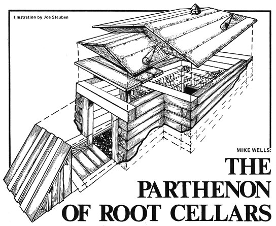
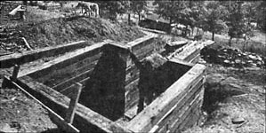
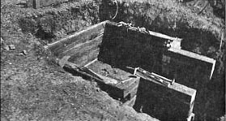
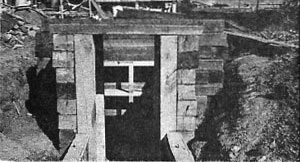
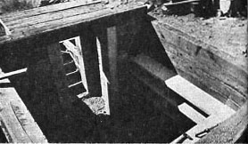
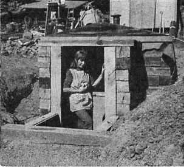
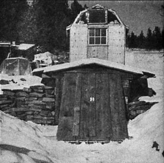

Building a root cellar for storing food can be quick, simple and inexpensive. Below, author Mike Wells explains how, building with railroad ties, he dug and constructed a root cellar within three months.
Our five-year search was over. We had found our home in the country: Sky Meadow, one hundred sixty acres of pasture, pines, junipers, bubbling springs and a panoramic 60-mile view of valley, mountain, sky and weather. It was nine months later before we took up residence in what - barring a subdivision and shopping center on the next section - will be our final move.
We arrived, grossly overloaded, on June 1, after three days of "unusually heavy" rains. The mile and a half of rutted tracks from the country road had turned into an impassable morass of adobe muck. A neighbor rancher down in the valley led us 12 miles through the forest on graveled logging roads to a spot only a quarter of a mile from the cabin. We packed in essentials and made camp, awaiting the drying of the roads.
While we waited out the three days of sunny, dry weather before the roads became passable, we explored our domain and planned our summer. The garden would go down there on that flat next to the orchard. We'd develop the spring uphill from the cabin first, and then the other two ... one for the garden and the other for the duck pond. One benefit of the cabin siding being off was that it would be easy to insulate and wire. We could get the poles for the deer fence over in that big stand of junipers on the east forty. I had to do something about that log shed before it collapsed. And that fallen-in root cellar ...
Where did the time go? Suddenly we were well into our second summer and Joanie kept complaining that if the root cellar wasn't completed soon we could split the turnips, rutabagas and kohlrabi and use them for cordwood. And I'd horse another 125-pound railroad tie into position and exclaim, "Only five more courses to go ... then comes the roof!"
The 8' X 12' hole at the brow of the hill had, in fact, been started over a year before. Willing summer visitors had wielded shovel, bar and pick with fervor and vigor - for a few minutes - and then had suddenly become more interested in the beer in the spring box or the view or just conversation ... the least of our needs during summer working weather.
Desultory stabs were made at "the hole" after the spring thaw but seemed to deepen it little. Other priorities beckoned: tilling, planting the garden, getting in next winter's wood (ideally done the prior spring), repairing winter damage to the road, clearing the last mile of the REA pole line, improving the big spring, digging 21 eight-foot-deep pole holes for the electricity and a few other miscellanea.
Along about early July, Joanie consulted her planting charts and announced, "I have to have a root cellar by September 1." (The garden was, by then, doing its thing all by itself with a little help from Joanie ... like beetle picking, earwig smashing and applying three tons of hay mulch.)
"OK, big mouth. You'll have a root cellar." Back to the pick and shovel. At a depth of four feet a ledge of basalt intruded, and half the last three feet of "the hole" came out in small pieces with the judicious application of sledge and wedge.
Sometime around mid-August we had a hole hacked into the hill, 8' X 12' horizontally X 7' deep. The original plan had been to do the cellar in concrete and rock, using the Nearings' built-up form method. However, the prospect of hauling all that sand and gravel from the riverbed 12 miles away - plus cement from our 60-mile-distant supply source - made the alternative of railroad ties attractive indeed ... especially when we found a bunch advertised at $1.25 each. (Around here, these days, they bring $2.00-$3.00 apiece ... if you can find them. And a few years ago they were free for the hauling!) The supply was only 80 miles away and we could haul 25 per load in the pickup.
Three trips later a pile of 70 ties reposed grandly on the hill beside "the hole".
"OK, Joanie. September 1: root cellar, Right?"
We moved our goodies in on October 10, only six weeks behind schedule. Not bad by country standards.
Here are some details of our cellar's construction: The contour of the grade dictated that the storage room's outer door be slanted at 45 degrees, with steps leading down into the vestibule and the inner door. Had the grade been steeper a straight walk-in would have been less trouble but not quite so traditional ... you can't slide down a vertical cellar door.
Since the bottom of "the hole" was either basalt or hardpan 'dobe, we needed only a minimal foundation. The forms were constructed of salvaged 2 X 4's and were left in place after the concrete set to provide nailers for the later trim.
While we waited for the concrete to cure, we thought it prudent to build a model of the cellar to 1"=1' scale so that foul-ups could be made on a tabletop with square homemade Lincoln Logs rather than at the jobsite. This proved to be one of the wisest moves in the whole project. Several modifications to my plans resulted, and when the ties went in they all fit nicely.
We laid up our storage room's walls by interlocking the eightfoot ties in "crib" style. Having neither electricity nor a large drill motor at the time of conception, I had planned to toenail the chunks of wood together using 40d ring-neck spikes. Later, acquisition of a portable generator and 1/2" drill motor made pegging not only preferable but possible. (Incidentally, the only drill bit for punching deep holes in ties, logs, etc., is the single fluted "ship auger".) Spikes were in fact used in conjunction with the other method, but the pegging halved the quantity of nails required and ensured alignment of the timbers.
Our ties, which had lain out in the central Oregon desert for decades, had developed both longitudinal crowns and humps across their short axes. Therefore, each had to be fitted to its mate beneath. Before lay-up I removed the bulges - by using a chain saw as a super-rasp-to eliminate the rocking of one beam upon the other. The long crown was compensated for by "cut and try" fitting. This meant that more than half the ties had to be handled several times (moved from one side to another until a fit was found). Timbers too twisted or crowned for the walls were set aside for the roof.
Horsing 125-pound ties, I should mention, is not an ideal oneman job. It can be done, but a guy tends to get armweary ... especially as the walls grow higher.
As the sides of our cellar crept upward, we prepared for backfilling by stuffing the cracks and unavoidable spaces between the ties with lambs' wool (courtesy of a neighboring rancher). The backfill was then liberally wet down into a mud slurry and tamped with a 2 X 4. Very little seeped through the caulking and, after drying, the walls became - for want of a better expression-selfgrouted. Above grade we stapled tar paper to the outside of the storage room before banking earth to the eaves.
(At this point Joanie, one eye on the slow progress and the other on the burgeoning garden, announced, "Look, all I wanted was a root cellar, not the Taj Mahal!" Visualizing the ultimate roofline, I asked, "Would you settle for the Parthenon?")
By early frost in September the roof was ready to go on ... but first shelves had to be built and a couple of loads of river gravel brought up for flooring. We'd considered a Buckboard floor of 2 X 4's until a neighbor pointed out what an ideal home that would make for black widow spiders. Besides, the gravel was free. I made the shelves of 3/4" particleboard seconds at $1.50 a sheet (to beat the almost prohibitive cost of pine or plywood).
Apples and pears demanded harvesting ... frostbitten tomato plants needed a home where their fruit could ripen ... turnips, potatoes, rutabagas and kohlrabi yearned for release from their earthly confines (the parsnips and Jerusalem artichokes stay in the ground over winter) ... and still the work went on. Lest this sound as if the cellar was an allconsuming three-month project, it should be noted that during the same time a goat pole barn was under construction and those 21 foundation holes were progressing slowly.
By September's end the cellar's shelves were in place and its roof was going on. Ties were laid - best side down - from wall to wall to create the ceiling. We fitted a length of 6" bule flue in the center for ventilation, with a butterfly draft control installed near the top of the cellar. (During times of extreme cold we just shove a gunny sack into the pipe.)
Then we laid a 2" X 12" ridgepole on the flat roof of the ties, followed by a double layer of tar paper with dirt atop to create an insulation barrier grading from 12" at the ridge to 4" at the eaves. This same contour was carried through on the vestibule where 3 X 12's were used for the ceiling instead of ties. Both roofs were then decked with 1 X 12's and covered with tar paper, with 90-pound, green roll roofing over all.
Our early plans called for mounding dirt completely over the roof, but so much earth was used in changing the grade around the cellar to insure runoff of rain and snow-melt that there wasn't enough left for cover. In summer, when grass has been planted right up to the eaves, the green roofing will match the surroundings nicely. When the grasses die ... voila! Farm-style Astroturf.
The steps leading from grade down to cellar level were also made of ties, set directly on sculptured hardpan and held by 3' lengths of pipe driven through and into the ground. They were further reinforced by pouring the base of the small retaining walls directly onto the ties. Adhesion of the concrete to both the timbers and the vestibule wall was insured by a number of large spikes driven into all mating surfaces, leaving adequate shank exposed to mate with the pour.
The steps and retaining walls served as a foundation when we framed up the storage room's entry to accommodate the double exterior doors. Salvaged 1 X 12's served as both in terior and outdoor siding, with fiberglass insulation between. The inner door (between the dead-air space of the vestibule and the main cellar) is an old hollow-core type once used as a table. It seems to be ideal, as the air cells between the veneer faces make an excellent thermal barrier.
Our root cellar runs good. During the fall and winter, when outside temperatures ranged from the 80's to the teens, the inside varied only from 48° to 52° F ... ideal, incidentally, for lagering home brew. Later in the winter, when overnight cold dropped to 20° below and the days hovered between 5° and 10° above zero, the lowest reading in our storage room was 34° ... and two 60-watt light bulbs left burning pushed it up to 40°.
Final touches will be applied as weather and mood dictate: trim at the eaves and overhang, gravel walk, rock retaining wall and facade. But these, though practical, are mostly cosmetic. For now, it's good to know that our provender fares better this year than last. Our first winter we tried the hay bale method of root preservation. It didn't work ... the deer ate our "root cellar".
|
 PHOTO: JOE STEUBEN When it was constructed, this root cellar plan cost its creators only $164. |
 MOTHER EARTH NEWS STAFF The root cellar begun with an 8-by-12-foot hole in the ground and was constructed with railroad ties. |
 MOTHER EARTH NEWS STAFF Before the roof could go on, shelves had to be build and gravel brought in for flooring. |
|
 MOTHER EARTH NEWS STAFF The contour of the grade dictated that the storage room's outer door be slanted at 45 degrees, with steps leading down into the vestibule and the inner door. |
 MOTHER EARTH NEWS STAFF Adhesion of the concrete to both the timbers and the vestibule wall was insured by a number of large spikes driven into all mating surfaces. |
 MOTHER EARTH NEWS STAFF Final touches, such as triming the eaves and overhang, can be added later. |
|
 MOTHER EARTH NEWS STAFF A root cellar can store food in a mild climate even during extreme outdoor temperatures. |
|
|